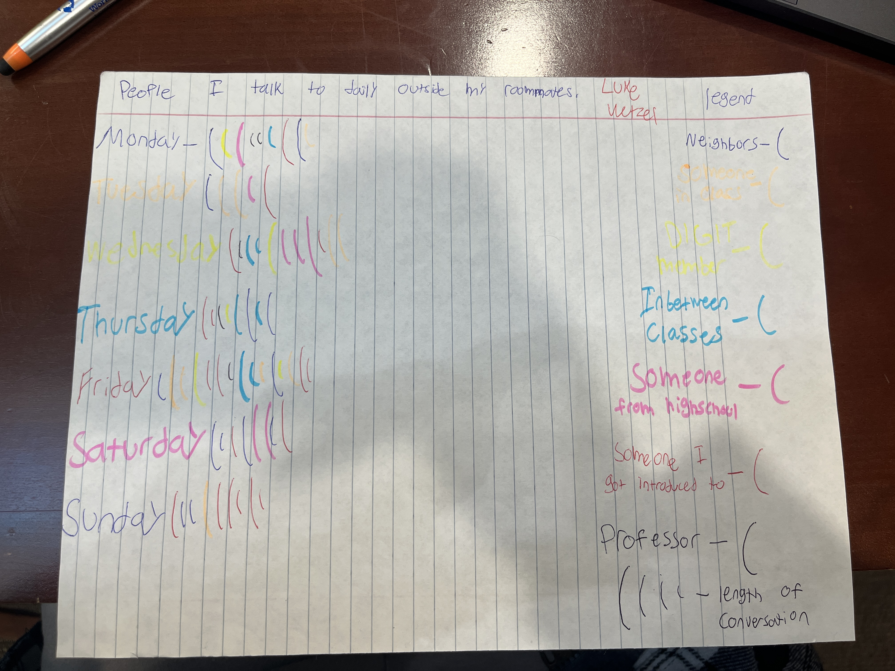

Thinglink is a 3d scanning app that allows you to scan a room and turn it into a 3d model where you can make annotations and describe the room virtually. The captions created are purely for fiction and enterntainment
Dear data is a project where we had to record our data for a week on a specific activities. I chose to do mine on how many times i interacted with someone new on campus as I had trouble meeting new people and introducing myself.
LukeWetzel © 2025 by Luke Wetzel is licensed under Creative Commons Attribution-ShareAlike 4.0 International